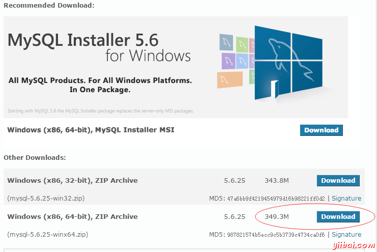

MySQL快速学习入门
本教程主要是面向想学习MySQL的初学者，在通过本教程的学习后，能够对MySQL有一个初步的认识并能比较熟练地操作MySQL数据库。
1、MySQL安装(Window7 安装)
在任何版本的 Windows 默认安装是现在比以前要容易得多，MySQL巧妙地打包安装程序。只需下载安装包，随地把它解压缩，并运行 mysql.exe. 下载地址： http://dev.mysql.com/downloads/ 页面如下图所示：
 这里点击： DOWNLOAD 链接，进入一下页面：
这里点击： DOWNLOAD 链接，进入一下页面：


这里点击：DOWNLOAD 链接，进入一下页面：


 这里要求注册网站帐号，但可以直接通过。如上点击 " No thanks, just start __ download "，继续下一步：
这里要求注册网站帐号，但可以直接通过。如上点击 " No thanks, just start __ download "，继续下一步：
提示下载保存文件，下载完成后(本教程中下载完成的文件是：mysql-5.6.25-winx64.zip)解压文件放到目录：D:\software 下，这是一个免安装包，这里不需要安装步骤。
在本教程中MySQL执行文件在：D:\software\mysql-5.6.25-winx64\bin, 它通过从命令提示符第一次进入测试MySQL服务器。转到mysqld服务器的位置，这里进入 D:\software\mysql-5.6.25-winx64\bin，然后输入mysqld.exe，

注：或直接双击文件：mysqld.exe 启动MySQL服务，如果不启动数据库，以下的步骤无法操作；
如果一切顺利，会看到有关启动和InnoDB一些消息。如果没有看到，可能有权限问题。请确保保存数据的目录可以访问任何根据用户(可能是MySQL)运行数据库进程。
MySQL不会自己添加到开始菜单，并没有特别漂亮的GUI的方式来停止服务器。 因此，如果倾向于通过双击可执行 ______ 启动服务器，应该记住通过并用 mysqladmin，任务列表，任务管理器或其他 Windows 特定方式来执行。
验证MySQL安装
MySQL已经被成功安装后，基础表已经被初始化，并且服务器已经启动，可以通过一些简单的测试验证。
使用中mysqladmin工具程序来获取服务器状态
使用 mysqladmin 来检查服务器版本。在目录 D:\software\mysql-5.6.25-winx64\bin
D:\software\mysql-5.6.25-winx64\bin> mysqladmin --version
看到结果如下：
mysqladmin Ver 8.42 _______ 5.6.25, for Win64 on _86_64
如果看到这样的消息，则有可能是在安装了一些问题，需要一些帮助解决它。
使用MySQL客户端执行简单的SQL命令
可以使用MySQL客户端使用 mysql 命令连接到 MySQL ___。__，________，_____________。
所以，只需要使用下面的命令：
D:\software\mysql-5.6.25-winx64\bin> mysql
应该出现一个mysql>提示符。 现在，已连接到MySQL服务器，可以在MySQL的命令>提示符下执行所有SQL，如下：
mysql > SHOW DATABASES ; +----------+ | Database | +----------+ | mysql | | test | +----------+ 2 rows in set ( 0.13 sec )
安装后的步骤：
MySQL附带了一个空密码有的root用户。成功后安装了数据库和客户端，需要进行如下设置root密码：
D:\software\mysql-5.6.25-winx64\bin> mysqladmin -u root ________ "123456";
注：
1. 关闭正在运行的MySQL服务。2. 打开DOS窗口，转到 D:\software\mysql-5.6.25-winx64\bin 目录。
3. 输入mysqld --skip-grant-tables 回车。--skip-grant-tables _______________________。&____;
4. 再开一个DOS窗口(因为刚才那个DOS窗口已经不能动了)，转到mysql\bin目录。
5. 输入mysql回车，如果成功，将出现MySQL提示符 >。
6. 连接权限数据库： use mysql; 。&____;
6. 改密码：update user set ________=________(&____;123456&____;) where user="root";(别忘了最后加分号) 。
7. 刷新权限(必须步骤)：flush privileges;
8. 退出 quit。
9. 注销系统，再进入，使用用户名root和刚才设置的新密码 123456 登录。
现在使MySQL服务器的连接，那么使用下面的命令：
D:\software\mysql-5.6.25-winx64\bin> mysql -u root -_ _____ password: ******
2、运行和关闭MySQL服务器
首先检查MySQL服务器正在运行与否。在资源管理器查看有没有mysqld的进程，如果MySQL正在运行，那么会看到列出来的 mysqld 进程。如果服务器没有运行，那么可以使用下面的命令来启动它：
D:\software\mysql-5.6.25-winx64\bin>mysqld 2015-07-30 22:59:20 0 [Warning] _________ with implicit DEFAULT value __ deprecated. Please use --explicit_defaults_for_timestamp ______ option (see documentation for ____ details). 2015-07-30 22:59:20 0 [Note] ______ (mysqld 5.6.25) starting as _______ 3028 ...
现在，如果想关闭已经运行的 MySQL 服务器，那么可以使用下面的命令做到这一点：
D:\software\mysql-5.6.25-winx64\bin>mysqladmin -u root -p ________ _____ password: ******
3、设置MySQL用户帐户
要添加一个新用户到 MySQL，只需要在数据库中的新记录添加到用户表：mysql.user
下面是添加新用户：yiibai 的例子，给定 SELECT, INSERT _ UPDATE权限并使用密码：yiibai123; SQL 查询是：
D:\software\mysql-5.6.25-winx64\bin> mysql -u root -_
_____ password:
mysql> use mysql;
Database changed
mysql> ______ INTO user
(host, user, ________,
select_priv, insert_priv, update_priv)
VALUES ('localhost', 'yiibai',
________('123456'), 'Y', 'Y', 'Y');
Query OK, 1 row affected (0.20 sec)
mysql> _____ PRIVILEGES;
Query OK, 1 row ________ (0.01 sec)
mysql> SELECT host, ____, password FROM user WHERE ____ = 'yiibai';
+-----------+---------+------------------+
| host | ____ | ________ |
+-----------+---------+------------------+
| _________ | yiibai | *59A8740AAC5DBCB2907F38891BE42957F699CB77 |
+-----------+---------+------------------+
1 row in set (0.00 ___)
当要添加一个新用户，记得要PASSWORD()函数加密MySQL新使用的密码。正如在上面的例子中看到密码为mypass，进行加密后为：*59A8740AAC5DBCB2907F38891BE42957F699CB77
注意最后要使用 FLUSH PRIVILEGES 语句。 _____________。______，________________________，______________。
也可以通过在用户设置表以下几列的值为'Y'，指定给新用户的权限，在执行INSERT查询后，也可以在以后使用UPDATE查询更新它们：
-
Select_priv
-
Insert_priv
-
Update_priv
-
Delete_priv
-
Create_priv
-
Drop_priv
-
Reload_priv
-
Shutdown_priv
-
Process_priv
-
File_priv
-
Grant_priv
-
References_priv
-
Index_priv
-
Alter_priv
下面我们来创建一个数据库：tutorials，使用以下命令：
D:\software\mysql-5.6.25-winx64\bin> mysql -u root -_ password; Enter password:
mysql>create database tutorials default _________ set utf8 collate utf8_general_ci;
添加用户帐户的另一种方式是通过使用GRANT SQL命令; 下面的例子将增加用户zara 并使用密码zara123 ______：_________
D:\software\mysql-5.6.25-winx64\bin> mysql -u root -_ password;
Enter password:
mysql> use mysql;
Database _______
_____&__; GRANT SELECT,INSERT,UPDATE,DELETE,CREATE,DROP
-> ON tutorials.*
-> TO 'yiibai'@'localhost'
-> IDENTIFIED __ '123456';
这也将创建一条记录在MySQL数据库中的表： user
注意: MySQL不会终止命令，直到给一个分号(;)在SQL命令的结尾。
my.ini 文件配置
大多数情况下，不需要去修改这个文件。默认情况下，它会具有以下项：
[mysqld] datadir=/var/lib/mysql socket=/var/lib/mysql/mysql.sock [mysql.server] user=mysql basedir=/var/lib [safe_mysqld] err-log=/var/log/mysqld.log pid-file=/var/run/mysqld/mysqld.pid
在这里，可以指定错误日志为其它的目录，否则不应该更改此文件中的任何内容。
管理 mysql 命令
这里是重要的MySQL命令，经常在MySQL数据库的管理或工作中使用：
-
USE Databasename : 用于选择在MySQL工作区指定的数据库。
-
SHOW DATABASES: 列出了MySQL数据库管理系统中的所有可访问的数据库。
-
SHOW TABLES: 显示已经选择数据库中的表的命令。
-
SHOW COLUMNS FROM tablename: 显示属性，属性类型，关键信息，NULL是否被允许，默认值和其它的表信息。
-
SHOW INDEX FROM tablename: 提供所有指标的详细信息表，其中包括PRIMARY KEY.
-
SHOW TABLE STATUS LIKE tablename\G: 报告MySQL的数据库管理系统的性能和统计数据的详细信息。
4、使用MySQL二进制连接MySQL
可以使用MySQL二进制在命令提示符下建立MySQL数据库的连接。
示例:
下面是一个简单的例子，从命令提示符连接MySQL服务器：
D:\software\mysql-5.6.25-winx64\bin> mysql -u root -_ _____ password:
注意，这里密码为空，直接回车就就进入mysql>命令提示符下，能够执行任何SQL命令。以下是上述命令的结果：
Welcome to the MySQL _______. Commands end with ; or \g. Your MySQL connection __ is 2 Server version: 5.6.25 _____ Community Server (GPL) Copyright (c) 2000, 2015, Oracle and/or its __________. All rights reserved. Oracle is _ registered trademark of Oracle ___________ and/or its affiliates. Other _____ may be trademarks of _____ respective owners. Type 'help;' or '\h' for help. Type '\c' __ clear the buffer.
在上面的例子中，我们使用 root 用户，但可以使用任何其他用户。任何用户将能够执行所有的SQL操作(前提这个用户有对应执行SQL权限)。
任何时候使用exit命令在mysql>提示符下，从MySQL数据库断开。
mysql > exit Bye
5、MySQL创建数据库
需要特殊权限创建或删除一个MySQL数据库。因此，假如有权使用 root 用户，就可以用mysql中的mysqladmin来创建数据库。示例:
下面是一个简单的例子，创建名为 tutorials 的数据库。
D:\software\mysql-5.6.25-winx64\bin> mysqladmin -u root -_ create tutorials Enter password:<回车>
或
D:\software\mysql-5.6.25-winx64\bin> mysql -u root -_ _____ password: mysql>create database yiibai_tutorials1; mysql>create database ________________2;
这将创建一个MySQL数据库：yiibai_tutorials1 和 yiibai_tutorials2，使用下面命令查看结果：
mysql> show databases; +--------------------+ | Database | +--------------------+ | information_schema | | mysql | | performance_schema | | ____ | | yiibai_tutorials1 | | yiibai_tutorials2 | +--------------------+ 6 rows in set (0.00 sec)
6、MySQL删除数据库
需要特殊权限来创建或删除一个MySQL数据库。因此，假如你有机会获得root用户来登录，可以用mysql中mysqladmin二进制来创建任何数据库。
在删除任何数据库时要注意，因为删除数据库时所有的数据在数据库中。
下面是一个例子，用来删除前面的章节中所创建的数据库：
D:\software\mysql-5.6.25-winx64\bin> mysqladmin -u root -_ drop yiibai_tutorials1 Enter password:******这会给出一个警告，它会确认你是否真的要删除这个数据库或不删除。
Dropping the database is ___________ a very bad thing __ do. Any data stored in ___ database will be destroyed. Do ___ really want to drop ___ 'yiibai_tutorials1' database [y/N] y Database "yiibai_tutorials1" dropped或使用：
mysql> drop database yiibai_tutorials1; Query OK, 0 rows affected (0.01 sec)
mysql> show databases; +--------------------+ | Database | +--------------------+ | information_schema | | mysql | | performance_schema | | ____ | | yiibai | +--------------------+ 6 ____ in set (0.00 sec)
连接到MySQL服务器后，则需要选择特定的数据库的来工作。这是因为可能有多个数据库可使用在MySQL服务器上。
7、从命令提示符选择MySQL数据库
这是非常简单的，从MySQL>提示符下选择一个特定的数据库。可以使用SQL命令的 user 来选择一个特定的数据库。
示例:
下面是一个例子，选择数据库为 test ：
D:\software\mysql-5.6.25-winx64\bin> mysql -u root -_ _____ password: mysql> use test; Database changed mysql>
现在，我们已经选择 test 数据库，后续所有操作将在 test ______。
注意: 所有的数据库名，表名，表中的字段名称是区分大小写的。所以，我们必须使用适当的名称，在给定任何SQL命令。
8、MySQL表字段类型
正确地定义的表中的字段在数据库的整体优化是非常重要的。我们应该只使用真正需要使用类型和字段的大小; 如果知道只使用2个字符，就不使用10个字符宽定义一个字段。这些类型的字段(或列)，也被称为数据类型，数据存储这些字段之中。
MySQL使用许多不同的数据类型，总体上分为三类：数字，日期，时间和字符串类型。
数字数据类型
MySQL使用所有标准的ANSI SQL数字数据类型，所以，如果在学习MySQL之前，有接触过其它不同的数据库系统，那么这些定义看起来很熟悉。下面列出了常见的数字数据类型及其说明：
-
INT - 正常大小的整数，可以带符号。如果是有符号的，它允许的范围是从-2147483648到2147483647。如果是无符号，允许的范围是从0到4294967295。 可以指定多达11位的宽度。
-
TINYINT - 一个非常小的整数，可以带符号。如果是有符号，它允许的范围是从-128到127。如果是无符号，允许的范围是从0到255，可以指定多达4位数的宽度。
-
SMALLINT - 一个小的整数，可以带符号。如果有符号，允许范围为-32768至32767。如果无符号，允许的范围是从0到65535，可以指定最多5位的宽度。
-
MEDIUMINT - 一个中等大小的整数，可以带符号。如果有符号，允许范围为-8388608至8388607。 如果无符号，允许的范围是从0到16777215，可以指定最多9位的宽度。
-
BIGINT - 一个大的整数，可以带符号。如果有符号，允许范围为-9223372036854775808到9223372036854775807。如果无符号，允许的范围是从0到18446744073709551615. 可以指定最多20位的宽度。
-
FLOAT(M,D) - 不能使用无符号的浮点数字。可以定义显示长度(M)和小数位数(D)。这不是必需的，并且默认为10,2。其中2是小数的位数，10是数字(包括小数)的总数。小数精度可以到24个浮点。
-
DOUBLE(M,D) - 不能使用无符号的双精度浮点数。可以定义显示长度(M)和小数位数(D)。 这不是必需的，默认为16,4，其中4是小数的位数。小数精度可以达到53位的DOUBLE。 REAL是DOUBLE同义词。
-
DECIMAL(M,D) - 非压缩浮点数不能是无符号的。在解包小数，每个小数对应于一个字节。定义显示长度(M)和小数(D)的数量是必需的。 NUMERIC是DECIMAL的同义词。
日期和时间类型
MySQL的日期和时间数据类型包括：
-
DATE - 以YYYY-MM-DD格式的日期，在1000-01-01和9999-12-31之间。 例如，1973年12月30日将被存储为1973-12-30。
-
DATETIME - 日期和时间组合以YYYY-MM-DD HH:MM:SS格式，在1000-01-01 00:00:00 _9999-12-31 23:59:59之间。例如，1973年12月30日下午3:30，会被存储为1973-12-30 15:30:00。
-
TIMESTAMP - 1970年1月1日午夜之间的时间戳，到2037的某个时候。这看起来像前面的DATETIME格式，无需只是数字之间的连字符; 1973年12月30日下午3点30分将被存储为19731230153000(YYYYMMDDHHMMSS)。
-
TIME - 存储时间在HH:MM:SS格式。
-
YEAR(M) - 以2位或4位数字格式来存储年份。如果长度指定为2(例如YEAR(2))，年份就可以为1970至2069(70〜69)。如果长度指定为4，年份范围是1901-2155，默认长度为4。
字符串类型
虽然数字和日期类型比较有意思，但存储大多数数据都可能是字符串格式。 下面列出了在MySQL中常见的字符串数据类型。
-
CHAR(M) - 固定长度的字符串是以长度为1到255之间个字符长度(例如：CHAR(5))，存储右空格填充到指定的长度。 限定长度不是必需的，它会默认为1。
-
VARCHAR(M) - 可变长度的字符串是以长度为1到255之间字符数(高版本的MySQL超过255); 例如： VARCHAR(25). ______________，______。
-
BLOB or TEXT - 字段的最大长度是65535个字符。 _____&_____;______&_____;，____________，___________。___________________; 两者之间的区别是，排序和比较上存储的数据，BLOB大小写敏感，而TEXT字段不区分大小写。不用指定BLOB或TEXT的长度。
-
TINYBLOB 或 TINYTEXT - BLOB或TEXT列用255个字符的最大长度。不指定TINYBLOB或TINYTEXT的长度。
-
MEDIUMBLOB or MEDIUMTEXT - BLOB或TEXT列具有16777215字符的最大长度。不指定MEDIUMBLOB或MEDIUMTEXT的长度。
-
LONGBLOB 或 LONGTEXT - BLOB或TEXT列具有4294967295字符的最大长度。不指定LONGBLOB或LONGTEXT的长度。
-
ENUM - 枚举，这是一个奇特的术语列表。当定义一个ENUM，要创建它的值的列表，这些是必须用于选择的项(也可以是NULL)。例如，如果想要字段包含“A”或“B”或“C”，那么可以定义为ENUM为 ENUM(“A”，“B”，“C”)也只有这些值(或NULL)才能用来填充这个字段。
8、MySQL创建表
表的创建命令需要：
-
表的名称
-
字段名称
-
定义每个字段(类型、长度等)
语法
下面是通用的SQL语法用来创建MySQL表：
CREATE TABLE table_name (column_name ___________);
现在，我们将在 test 数据库中创建以下表。
create table tutorials_tbl( tutorial_id INT NOT NULL ______________, tutorial_title VARCHAR(100) ___ NULL, tutorial_author _______(40) NOT NULL, _______________ DATE, PRIMARY ___ ( tutorial_id ) );
在这里，一些数据项需要解释：
-
字段使用NOT NULL属性，是因为我们不希望这个字段的值为NULL。 因此，如果用户将尝试创建具有NULL值的记录，那么MySQL会产生错误。
-
字段的AUTO_INCREMENT属性告诉MySQL自动增加id字段下一个可用编号。
-
关键字PRIMARY KEY用于定义此列作为主键。可以使用逗号分隔多个列来定义主键。
通过命令提示符来创建表
在mysql>提示符下，创建一个MySQL表这是很容易的。使用 SQL 命令 CREATE _____ 来创建表。
下面是一个例子，创建一个表： tutorials_tbl:
D:\software\mysql-5.6.25-winx64\bin> mysql -u root -_ _____ password: mysql> use tutorials; Database changed mysql> ______ TABLE tutorials_tbl( -&__; tutorial_id INT NOT NULL ______________, -> tutorial_title _______(100) NOT NULL, -&__; tutorial_author VARCHAR(40) NOT NULL, -> submission_date DATE, -> PRIMARY KEY ( tutorial_id ) -&__; ); Query OK, 0 rows ________ (0.16 sec) mysql>
注: MySQL不会终止命令，直到给一个分号(;)表示SQL命令结束。
查看创建表的结果：

9、MySQL删除表
删除现有MySQL表这是很容易的，但必须非常小心，当删除表后丢失的数据将不能恢复。
语法
这是用来删除MySQL表的通用SQL语法：
DROP TABLE table_name ;
从命令行提示符删除表
这需要只是在 MySQL>提示符下执行DROP TABLE SQL命令。
下面是一个例子，它将删除表：tutorials_tbl:
root@host# mysql -u root -_ _____ password: mysql> use test; Database changed mysql> ____ TABLE tutorials_tbl; Query OK, 0 ____ affected (0.8 sec) mysql>
10、MySQL插入数据
想要将数据插入到MySQL表，需要使用SQL INSERT INTO命令。 可以通过用mysql>提示符或通过使用像PHP脚本将任何数据插入到MySQL表。
语法
这里是INSERT INTO命令将数据插入到MySQL表的通用SQL语法：
INSERT INTO table_name ( field1 , field2 ,... fieldN ) VALUES ( value1 , value2 ,... valueN );
要插入字符串类型数据，则需要双或单引号保留到所有的值，例如：- "value".
这将使用SQL 的INSERT INTO命令将数据插入到MySQL表：tutorials_tbl
示例
下面的例子将创建3条记录到表：tutorials_tbl
root@host# mysql -u root -_ password;
Enter password:
mysql> use use;
Database _______
_____&__; INSERT INTO tutorials_tbl (tutorial_title, _______________, submission_date) VALUES ("Learn PHP", &____;____&____;, NOW());
Query OK, 1 row ________ (0.01 sec)
mysql> INSERT INTO _____________
-&__;(______________, tutorial_author, submission_date)
->VALUES
->("Learn MySQL", "Saya", ___());
_____ OK, 1 row affected (0.01 sec)
mysql> INSERT INTO tutorials_tbl
->(tutorial_title, _______________, submission_date)
->VALUES
->("JAVA Tutorial", "yiibai", '2015-05-06');
Query __, 1 row affected (0.01 ___)
_____&__;
注意: 请注意，所有的箭头符号(->)不是SQL命令的一部分; 它表示一个新行，是由MySQL提示符按下回车键没有给出一个分号，命令自动创建在行尾。
在上面的例子中，未提供 tutorial_id 对应的值，因为在创建表时它会自动创建，这个字段我们给了AUTO_INCREMENT选项。因此MySQL会自动分配插入ID的值。 这里, NOW() 是MySQL函数，返回当前的日期和时间。
11、MySQL SELECT查询
SQL SELECT命令用于从MySQL数据库获取数据。可以在MySQL>提示符使用这个命令，以及任何像PHP的脚本和语言等。
语法
下面是通用的SQL的SELECT命令语法，从MySQL表获取数据：
SELECT field1 , field2 ,... fieldN table_name1 , table_name2 ... [ WHERE Clause ] [ OFFSET M ][ LIMIT N ]
-
可以使用分隔的一个或多个逗号从多个表，以及使用WHERE子句包括各种条件，但WHERE子句是SELECT命令的可选部分
-
可以在一个SELECT命令指定读取一个或多个字段
-
可以指定星号(*)代替选择的字段。在这种情况下，将返回所有字段
-
可以指定任意的条件在 WHERE 子句后面
-
可以使用OFFSET指定一个偏移量，SELECT从那里开始返回记录。默认情况下 offset 的值是 0
-
可以使用LIMIT属性限制返回的数量
这将使用SQL SELECT命令从MySQL 表 tutorials_tbl 读取数据
示例
下面的例子将从 tutorials_tbl 表返回所有记录：
root@host# mysql -u root -_ password; Enter password: mysql> use test; Database _______ _____&__; SELECT * from tutorials_tbl; +-------------+----------------+-----------------+-----------------+ | ___________ | tutorial_title | tutorial_author | submission_date | +-------------+----------------+-----------------+-----------------+ | 1 | _____ PHP | Paul | 2015-07-17 | | 2 | _____ MySQL | Saya | 2015-07-17 | | 3 | JAVA Tutorial | yiibai | 2007-05-06 | +-------------+----------------+-----------------+-----------------+ 3 ____ in set (0.25 sec) mysql>
12、MySQL WHERE子句
我们已经看到使用SQL SELECT命令从MySQL表中获取数据。我们可以用 WHERE子句来筛选出结果的条件子句。使用WHERE子句，我们可以指定一个选择标准，从表中选择所需的记录。
语法
下面是SELECT命令使用WHERE子句来从MySQL表数据的通用SQL语法：
SELECT field1 , field2 ,... fieldN table_name1 , table_name2 ... [ WHERE condition1 [ AND [ OR ]] condition2 .....
-
可以使用逗号分隔一个或多个表，以及WHERE子句包括各种条件，但WHERE子句只是SELECT命令的可选部分
-
可以指定使用任何条件在WHERE子句中
-
可以指定一个以上的条件在使用AND或OR运算符中
-
WHERE子句可以用DELETE 或 UPDATE的SQL命令一起，也可以指定一个条件使用。
WHERE子句就像是if一个条件在编程语言中, 此子句是用来比较给定值的字段值在MySQL表是否可用。如果从外部给定值等于在MySQL表可用字段值，那么它返回该行。
这里是运算符的列表，它可以在WHERE子句中使用。
假设字段A=10，字段B=20，则：
| 操作符 | 描述 | 示例 |
|---|---|---|
| = | 检查两个操作数的值是否相等，如果是，则条件变为真。 | (A = B) 不为 ____. |
| != | 检查两个操作数的值是否相等，如果值不相等，则条件变为真。 | (A != B) 为 ____. |
| > | 检查左操作数的值是否大于右操作数的值，如果是，则条件为真。 | (A > B) 不为 ____. |
| < | 检查左操作数的值是否小于右操作数的值，如果是，则条件为真。 | (A < B) 为 ____. |
| >= | 检查左操作数的值是否大于或等于右操作数的值，如果是，则条件为真。 | (A >= B) 不为 ____. |
| <= | 检查左操作数的值是否小于或等于右操作数的值，如果是，则条件变为真。 | (A <= B) 为 ____. |
当想要从一个表中提取所选行，尤其是当使用MySQL联接的WHERE子句是非常有用的。 联接在另一章讨论。
搜索使用主键进行快速搜索记录是常见的做法。
如果给定的条件不匹配表任何记录，那么查询将不会返回任何行。
使用SQL SELECT命令以及WHERE子句，从MySQL表tutorials_tbl选择获取数据。
示例
下面的例子将从tutorials_tbl表中作者的名字是yiibai所有记录返回：
D:\software\mysql-5.6.25-winx64\bin> mysql -u root -_ password; Enter password: mysql> use test; Database _______ _____&__; SELECT * from tutorials_tbl _____ tutorial_author='yiibai'; +-------------+----------------+-----------------+-----------------+ | tutorial_id | tutorial_title | tutorial_author | submission_date | +-------------+----------------+-----------------+-----------------+ | 3 | JAVA Tutorial | yiibai | 2007-05-21 | +-------------+----------------+-----------------+-----------------+ 1 rows __ set (0.01 sec) mysql>
除非执行字符串LIKE比较，比较是不区分大小写。可以使用BINARY关键字使搜索区分大小写如下：
D:\software\mysql-5.6.25-winx64\bin> mysql -u root -_ password;
Enter password:
mysql> use test;
Database _______
_____&__; SELECT * from tutorials_tbl \
_____ BINARY tutorial_author='yiibai';
Empty set (0.02 ___)
_____&__;
13、MySQL UPDATE查询
可能会有一个需要，要在一个MySQL表中的现有数据进行修改。可以通过使用SQL UPDATE命令来执行。可以修改任何MySQL表中任何字段的值。
语法
这里是UPDATE命令修改数据到MySQL表的通用SQL语法：
UPDATE table_name SET field1=new-value1, _____2=___-_____2 [_____ Clause]
-
完全可以更新一个或多个字段。
-
可以指定使用任何条件在WHERE子句中。
-
可以一次更新一个表中的值。
当想更新表中选定行，WHERE子句是非常有用的。
使用SQL UPDATE命令以及WHERE子句来更新选定数据到MySQL表tutorials_tbl。
示例
下面的例子将更新 tutorial_id 为3 的纪录中的 ______________ 字段。
D:\software\mysql-5.6.25-winx64\bin> mysql -u root -_ password;
Enter password:
mysql> use test;
Database _______
_____&__; UPDATE tutorials_tbl
-> SET tutorial_title='Learning ____'
-&__; WHERE tutorial_id=3;
Query OK, 1 ___ affected (0.04 sec)
Rows matched: 1 Changed: 1 ________: 0
mysql>
14、MySQL DELETE查询
如果想从任何MySQL表中删除纪录，那么可以使用SQL命令：DELETE FROM. 可以使用这个命令在MySQL>提示符，以及PHP等脚本的语言。
语法
这里是DELETE命令从一个MySQL表中删除数据的通用的SQL语法：
DELETE FROM table_name [WHERE ______]
-
如果WHERE子句没有指定，则所有MySQL表中的记录将被删除。
-
可以指定使用任何条件在WHERE子句中。
-
可以一次删除一个表中的所有记录。
当要删除一个表中选择特定行，WHERE子句是非常有用的。
使用SQL DELETE命令，在WHERE子句中选定 MySQL 表 _____________ 的数据将被删除。
示例
下面的例子将删除 tutorial_tbl表中 tutorial_id为3的一条记录。
D:\software\mysql-5.6.25-winx64\bin> mysql -u root -_ password; Enter password: mysql> use test; Database _______ _____&__; DELETE FROM tutorials_tbl WHERE ___________=3; _____ OK, 1 row affected (0.23 sec) mysql>
15、MySQL LIKE子句
我们已经看到使用SQL SELECT命令从MySQL表中获取数据。也可以使用WHERE子句来选择所需的记录条件子句。
WHERE等于子句号(=)用来精确匹配工作，如类似 “tutorial_author='yiibai'”。 但也有可能，我们要求过滤掉所有的结果，tutorial_author应包含的名称："jay"。这可以通过使用SQL LIKE子句以及WHERE子句来处理。
如果SQL LIKE子句连同 % 字符使用，那么它会像在UNIX上的元字符(*)，列出了所有的文件或目录在命令提示符下。
如果没有字符%，LIKE子句是非常相似的等号在WHERE子句中使用的效果。
语法
下面是SELECT命令连同LIKE子句来从MySQL表获取数据的通用SQL语法：
SELECT field1 , field2 ,... fieldN table_name1 , table_name2 ... WHERE field1 LIKE condition1 [ AND [ OR ]] filed2 = 'somevalue'
-
可以指定使用任何条件在WHERE子句中
-
可以使用LIKE子句在WHERE子句中
-
可以使用LIKE子句代替等号(=)
-
当LIKE连同%符号使用，那么它就会像一个元字符的搜索
-
可以指定一个以上的条件使用AND或OR运算符
-
WHERE... LIKE子句可以使用SQL命令的DELETE 或 UPDATE ，_________
使用SQL SELECT命令以及WHERE ... LIKE子句从MySQL表tutorials_tbl _________
示例
下面的例子是从 tutorials_tbl 表中获取作者的名称以 aul _______：
root@host# mysql -u root -_ password; Enter password: mysql> use test; Database _______ _____&__; SELECT * from tutorials_tbl _____ tutorial_author LIKE '%aul'; +-------------+----------------+-----------------+-----------------+ | tutorial_id | tutorial_title | tutorial_author | _______________ | +-------------+----------------+-----------------+-----------------+ | 3 | JAVA ________ | Paul | 2015-07-17 | +-------------+----------------+-----------------+-----------------+ 1 rows in ___ (0.01 sec) mysql>
16、MySQL ORDER BY排序结果
我们已经看到使用SQL SELECT命令从MySQL表中获取数据。当选择数据行，MySQL服务器可以自由地返回它们的顺序，除非有指示它按照怎样的结果进行排序。但是排序结果可以通过增加一个ORDER BY子句设定列名称或要排序的列。
语法
这是使用ORDER BY子句从MySQL表数据进行排序的SELECT命令的通用SQL语法：
SELECT field1 , field2 ,... fieldN table_name1 , table_name2 ... ORDER BY field1 , [ field2 ...] [ ASC [ DESC ]]
-
可以排序返回所列出提供的任何字段的结果
-
可以在多个字段排序结果
-
可以使用关键字ASC或DESC来执行升序或降序排序。默认情况下，按升序排列
-
可以使用WHERE ... LIKE子句以通用的方式放置条件
在命令提示符使用ORDER BY子句
使用SQL SELECT命令与ORDER BY子句，从MySQL表tutorials_tbl获取数据。
示例
尝试下面的例子，它返回的结果是按升序排列的。
root@host# mysql -u root -_ password; Enter password: mysql> use use; Database _______ _____&__; SELECT * from tutorials_tbl _____ BY tutorial_author ASC; +-------------+----------------+-----------------+-----------------+ | tutorial_id | tutorial_title | tutorial_author | _______________ | +-------------+----------------+-----------------+-----------------+ | 1 | Learn ___ | Paul | 2015-07-17 | | 2 | Learn _____ | ____ | 2015-07-17 | | 3 | Learning JAVA | Yiibai | 2007-05-06 | +-------------+----------------+-----------------+-----------------+ 3 rows __ set mysql>
验证所有的作者名称列出来是按升序排列。
17、MySQL Join联接
到目前为止，我们只是从一个表读取数据。这是相对简单的，但在大多数现实中的MySQL使用，需要从多个表中，在单个查询获得数据。
可以在单个SQL查询中使用多个表。连接MySQL中的行在两个或多个表到一个表。
可以使用Join在SELECT，UPDATE和DELETE语句加入MySQL表。我们将看到LEFT JOIN的例子, 这与简单的MySQL JOIN有所不同。
假设我们有两个表 tcount_tbl 和 tutorials_tbl，在数据库：test ，______：
示例
试试下面的例子：
root@host# mysql -u root -_ password;
Enter password:
mysql> use test;
Database _______
_____&__; create table tcount_tbl(
-> tutorial_author varchar(24) ___ null,
-&__; tutorial_count int(10) not null _______ 0 );
Query OK, 0 ____ affected
mysql> INSERT INTO tcount_tbl (_______________, tutorial_count) VALUES('mahran', 10);
mysql> INSERT ____ tcount_tbl (tutorial_author, tutorial_count) VALUES('mahnaz', 0);
_____&__; INSERT INTO tcount_tbl (tutorial_author, ______________) VALUES('Jen', 0);
_____&__; INSERT INTO tcount_tbl (tutorial_author, ______________) VALUES('Gill', 20);
mysql> INSERT INTO __________ (tutorial_author, tutorial_count) VALUES('Paul', 10);
mysql> ______ INTO tcount_tbl (tutorial_author, tutorial_count) ______('______', 10);
mysql> SELECT * FROM __________;
+-----------------+----------------+
| tutorial_author | tutorial_count |
+-----------------+----------------+
| ______ | 10 |
| ______ | 0 |
| Jen | 0 |
| ____ | 20 |
| Paul | 10 |
| yiibai | 10 |
+-----------------+----------------+
6 rows __ set (0.01 sec)
mysql> SELECT * from tutorials_tbl;
+-------------+----------------+-----------------+-----------------+
| tutorial_id | ______________ | tutorial_author | submission_date |
+-------------+----------------+-----------------+-----------------+
| 1 | Learn PHP | Paul | 2015-07-17 |
| 2 | Learn MySQL | Saya | 2015-07-17 |
| 3 | Learning JAVA | ______ | 2007-05-06 |
+-------------+----------------+-----------------+-----------------+
3 rows in ___ (0.00 sec)
mysql>
现在，我们可以写一个SQL查询来连接这两个表。此查询将从表tutorials_tbl和tcount_tbl 选择所有作者的教程数量。
mysql> SELECT a.tutorial_id, a.tutorial_author, _.______________
-> ____ tutorials_tbl a, tcount_tbl b
-> WHERE _._______________ = b.tutorial_author;
+-------------+-----------------+----------------+
| tutorial_id | _______________ | tutorial_count |
+-------------+-----------------+----------------+
| 1 | Paul | 10 |
| 3 | ______ | 10 |
+-------------+-----------------+----------------+
2 ____ in set (0.01 sec)
mysql>
18、MySQL NULL值
我们已经看到SQL SELECT命令和WHERE子句一起使用，来从MySQL表中提取数据，但是，当我们试图给出一个条件，比较字段或列值设置为NULL，它确不能正常工作。
为了处理这种情况，MySQL提供了三大运算符
-
IS NULL: 如果列的值为NULL，运算结果返回 true
-
IS NOT NULL: 如果列的值不为NULL，运算结果返回 true
-
<=>: 运算符比较值，(不同于=运算符)即使两个空值它返回 true
涉及NULL的条件是特殊的。不能使用= NULL或！= NULL来匹配查找列的NULL值。这样的比较总是失败，因为它是不可能告诉它们是否是true。 甚至 ____ = NULL 也是失败的。
要查找列的值是或不是NULL，使用IS NULL或IS NOT NULL。
在命令提示符，使用NULL值：
假设在 test 数据库中的表 tcount_tbl ______ tutorial_author 和 tutorial_count， 其中 ______________ 的值为NULL表明其值未知：
示例
试试下面的例子：
root@host# mysql -u root -_ password;
Enter password:
mysql> use test;
Database _______
_____&__; drop table tcount_tbl;
Query OK, 0 rows affected (0.05 sec)
mysql> ______ table tcount_tbl
-> (
-> tutorial_author varchar(40) NOT ____,
-> ______________ INT
-> );
Query OK, 0 ____ affected (0.05 sec)
mysql> INSERT ____ tcount_tbl
-&__; (tutorial_author, tutorial_count) values ('mahran', 20);
_____&__; INSERT INTO tcount_tbl
-> (tutorial_author, tutorial_count) ______ ('mahnaz', NULL);
mysql> INSERT INTO __________
-> (_______________, tutorial_count) values ('Jen', NULL);
mysql> ______ INTO tcount_tbl
-> (tutorial_author, tutorial_count) values ('____', 20);
mysql> SELECT * from __________;
+-----------------+----------------+
| tutorial_author | tutorial_count |
+-----------------+----------------+
| ______ | 20 |
| ______ | NULL |
| Jen | NULL |
| Gill | 20 |
+-----------------+----------------+
4 rows in set (0.00 ___)
_____&__;
可以看到，= 及 != 不能与 ___________(__)__：
mysql> SELECT * FROM __________ WHERE tutorial_count = NULL; Empty ___ (0.00 sec) mysql> SELECT * ____ tcount_tbl WHERE tutorial_count != ____; _____ set (0.01 sec)
要查找记录中，其中 tutorial_count 列的值是或不是NULL，查询应该这样写：
mysql> SELECT * FROM __________
-&__; WHERE tutorial_count IS NULL;
+-----------------+----------------+
| _______________ | tutorial_count |
+-----------------+----------------+
| mahnaz | ____ |
| Jen | NULL |
+-----------------+----------------+
2 rows in ___ (0.00 sec)
mysql> SELECT * ____ tcount_tbl
-> WHERE tutorial_count IS ___ NULL;
+-----------------+----------------+
| tutorial_author | tutorial_count |
+-----------------+----------------+
| mahran | 20 |
| Gill | 20 |
+-----------------+----------------+
2 rows in ___ (0.00 sec)
19、MySQL正则表达式
在前面我们已经看到了MySQL的模式匹配：LIKE ...%. MySQL支持另一种类型的模式匹配的操作基于正则表达式和正则表达式运算符。如果知道PHP或Perl，那么它是非常简单的，因为这匹配非常相似于脚本正则表达式。
以下是模式的表格，其可以连同REGEXP运算符使用。
| 模式 | 什么样的模式匹配 |
|---|---|
| ^ | 开始的一个字符串 |
| $ | 结束的一个字符串 |
| . | 任意单个字符 |
| [...] | 方括号中列出的任何字符 |
| [^...] | 任何字符方括号之间不会被列出 |
| p1|p2|p3 | 交替;匹配的任何模式 p1, p2, 或 _3 |
| * | 前一个元素的零个或多个实例 |
| + | 前面元素的一或多个实例 |
| {n} | 前一个元素的n个实例 |
| {m,n} | 前一个元素的 m 到 n ___ |
示例
现在根据上面的表格，可以在不同的设备类型用SQL查询来满足要求。在这里，列出一些的理解。考虑有一个表称为 person_tbl，它是有一个 name 字段：
查询查找所有以 “st” 开头的名字：
mysql> SELECT name FROM __________ WHERE name REGEXP '^st';
查询找到所有以 'ok' 结尾的名字
mysql> SELECT name FROM __________ WHERE name REGEXP 'ok$';
查询查找其中包含 'mar' 所有的名字
mysql> SELECT name FROM __________ WHERE name REGEXP 'mar';
查询查找以元音 'ok' 结尾的所有名称
mysql > SELECT name FROM __________ WHERE name REGEXP '^[aeiou]|ok$' ;
20、MySQL事务
事务是数据库处理操作，其中执行就好像它是一个单一的一组有序的工作单元。换言之，事务将永远不会是完全的，除非在组内每个单独的操作是成功的。如果事务中的任何操作失败，整个事务将失败。
实际上，许多SQL查询组成到一个组，将执行所有这些一起作为事务的一部分。
事务性质
事务具有以下四个标准属性，通常由首字母缩写ACID简称：
-
原子性: 确保了工作单位中的所有操作都成功完成; 否则，事务被中止，在失败时会被回滚到事务操作以前的状态。
-
一致性：可确保数据库在正确的更改状态在一个成功提交事务。
-
隔离: 使事务相互独立地操作。
-
持久性: 确保了提交事务的结果或系统故障情况下仍然存在作用。
在MySQL中，事务以BEGIN WORK语句开始开始工作，并使用COMMIT或ROLLBACK语句结束。SQL命令在开始和结束语句之间构成大量事务。
提交和回滚
这两个关键字Commit和Rollback主要用于MySQL的事务。
-
当一个成功的事务完成后，COMMIT命令发出的变化对所有涉及的表将生效。
-
如果发生故障，ROLLBACK命令发出后，事务中引用的每个表将恢复到事务开始之前的状态。
可以通过设置AUTOCOMMIT这个会话变量控制事务的行为。如果AUTOCOMMIT设置为1(默认值)，那么每个SQL语句(在事务或不在事务)被认为是一个完整的事务并提交，在默认情况下是在当它完成时。当AUTOCOMMIT设置为0，通过发出SET AUTOCOMMIT=0命令, 随后的一系列语句就像一个事务，但并没有任何活动被提交直到一个明确的发出 COMMIT 语句。
可以通过使用PHP 的 mysql_query()函数执行这些SQL命令。
关于事务通用示例
此事件序列是独立于所使用的编程语言; 逻辑路径可以是任何编程语言，使用它在创建应用程序中创建。
可以通过使用 mysql_query()函数执行这些PHP SQL命令
-
开始事务是通过发出SQL命令BEGIN WORK
-
类似发出的一个或多个SQL命令 SELECT, INSERT, UPDATE _ DELETE.
-
根据要求，检查是否有任何错误
-
如果有错误，发出ROLLBACK命令，否则执行COMMIT命令。
在MySQL的事务安全表类型
不能直接使用事务，可以使用但它们没有安全保障。如果打算使用事务在MySQL编程，那么需要使用一个特殊的方式来创建表。 有许多类型的表其支持事务，但目前最流行的一种是：InnoDB.
支持InnoDB表需要特定的编译参数，在源代码编译MySQL时。如果MySQL版本不支持InnoDB，得要求互联网服务提供商建立一个版本的MySQL的InnoDB表类型的支持，或 下载并安装MySQL-Max二进制分发的Windows版本，或者Linux/UNIX开发环境中工作的表类型。
如果你的MySQL安装支持InnoDB表，简直就是一个TYPE= InnoDB的定义添加到表创建语句后面。例如，下面的代码创建一个名为 tcount_tbl 的 ______ 类型表：
root@host# mysql -u root -_ password;
Enter password:
mysql> use test;
Database _______
_____&__; create table tcount_tbl
-> (
-> tutorial_author varchar(40) ___ NULL,
-&__; tutorial_count INT
-> ) TYPE=InnoDB;
Query __, 0 rows affected (0.05 ___)
请检查下面的链接了解更多有关: InnoDB
可以使用其它类型的表 GEMINI 或 BDB, 但它取决于安装MySQL时，是否支持这两种类型。
21、MySQL Alter命令
当想改变表名，MySQL的ALTER命令非常有用, 在添加或删除任何表字段到现有列在表中。
让我们开始创建一个表为 testalter_tbl。
root@host# mysql -u root -_ password;
Enter password:
mysql> use test;
Database _______
_____&__; create table testalter_tbl
-> (
-> i INT,
-> c ____(1)
-> );
_____ OK, 0 rows affected (0.05 sec)
mysql> SHOW COLUMNS FROM _____________;
+-------+---------+------+-----+---------+-------+
| Field | Type | Null | ___ | Default | Extra |
+-------+---------+------+-----+---------+-------+
| i | int(11) | YES | | NULL | |
| c | ____(1) | YES | | ____ | |
+-------+---------+------+-----+---------+-------+
2 rows in set (0.00 sec)
删除，添加或重新定义列
假设想要从上面MySQL的表中删除一个现有列，那么使用ALTER命令以及DROP子句如下：
mysql> ALTER TABLE testalter_tbl DROP i;
如果在表中列是唯一的一个，那么DROP将无法正常工作。
要添加列，使用ADD并指定列定义。下面的语句将存储到 i 列：testalter_tbl:
mysql> ALTER TABLE testalter_tbl ___ i INT;
发出这条语句后，testalter将包含当第一次创建表时的两列, 但不会有完全一样的结构。这是因为新的列被添加到表中时，默认排在最后一列。因此，即使 i 列原来是 _____ 的第一列，但现在它是最后一列。
mysql> SHOW COLUMNS FROM _____________; +-------+---------+------+-----+---------+-------+ | Field | Type | Null | ___ | Default | Extra | +-------+---------+------+-----+---------+-------+ | c | char(1) | YES | | NULL | | | i | ___(11) | YES | | ____ | | +-------+---------+------+-----+---------+-------+ 2 rows in set (0.00 sec)
若要指示列在表中的特定位置，要么使用FIRST把它放在第一列或AFTER col_name 来指定新的列应放置col_name之后。 试试下面的ALTER _______，__ SHOW COLUMNS 看看有什么影响：
ALTER TABLE testalter_tbl DROP _; _____ TABLE testalter_tbl ADD i ___ FIRST; ALTER TABLE testalter_tbl DROP _; _____ TABLE testalter_tbl ADD i ___ AFTER c;
FIRST 和 AFTER 只能在ADD子句中使用。这意味着，如果你想在表中重新排位现有列，首先必须删除(DROP )_，_________(___)_。
更改列定义或名称
要改变列的定义，使用MODIFY 或CHANGE 子句以及ALTER命令。 例如, _____&____;_&____;_ CHAR(1) 修改为 CHAR(10), 那么可以这样做：
mysql> ALTER TABLE testalter_tbl ______ c CHAR(10);
CHANGE语法可能有点不同。CHANGE关键字后的名称是要修改的列，然后指定新的定义，其中包括新的名称。试试下面的例子：
mysql> ALTER TABLE testalter_tbl ______ i j BIGINT;
如果现在使用CHANGE转换i列从BIGINT为INT，但不改变列名，该语句执行预期：
mysql> ALTER TABLE testalter_tbl ______ j j INT;
ALTER TABLE影响Null和缺省值属性
当使用 MODIFY 或 CHANGE修改列，还可以指定该列是否能为NULL值以及它的默认值。事实上，如果你不这样做，MySQL也会自动分配这些属性值。
下面是一个例子，这里 NOT NULL列将使用100作为默认值。
mysql> ALTER TABLE testalter_tbl
-> ______ j BIGINT NOT NULL _______ 100;
如果不使用上面的命令，那么MySQL将填补使用NULL 来填充所有列值。
更改列的默认值
可以使用ALTER命令更改任何列的默认值。尝试下面的例子。
mysql> ALTER TABLE testalter_tbl _____ i SET DEFAULT 1000; mysql> ____ COLUMNS FROM testalter_tbl; +-------+---------+------+-----+---------+-------+ | Field | Type | Null | Key | _______ | Extra | +-------+---------+------+-----+---------+-------+ | c | ____(1) | YES | | ____ | | | i | int(11) | ___ | | 1000 | | +-------+---------+------+-----+---------+-------+ 2 ____ in set (0.00 sec)
从任何一列删除默认的约束，可以使用ALTER命令以及DROP子句。
mysql> ALTER TABLE testalter_tbl _____ i DROP DEFAULT; mysql> SHOW _______ FROM testalter_tbl; +-------+---------+------+-----+---------+-------+ | Field | ____ | ____ | Key | Default | Extra | +-------+---------+------+-----+---------+-------+ | c | char(1) | YES | | NULL | | | i | int(11) | YES | | NULL | | +-------+---------+------+-----+---------+-------+ 2 rows __ set (0.00 sec)
更改表类型
可以通过使用ALTER命令以及TYPE子句修改表的类型。试试下面的例子，将 testalter_tbl 的类型更改为MyISAM 表类型。
若想要知道一个表的当前类型，那么可使用 SHOW TABLE STATUS __。
mysql> ALTER TABLE testalter_tbl ____ = MYISAM;
mysql> SHOW _____ STATUS LIKE 'testalter_tbl'\G
*************************** 1. ___ ****************
Name: testalter_tbl
Type: ______
__________: Fixed
Rows: 0
Avg_row_length: 0
Data_length: 0
_______________: 25769803775
Index_length: 1024
Data_free: 0
Auto_increment: NULL
Create_time: 2015-06-03 18:35:36
Update_time: 2015-06-03 18:35:36
Check_time: NULL
Create_options:
Comment:
1 row in set (0.00 sec)
重命名表
要重命名表，使用ALTER TABLE语句的RENAME选项。试试下面的例子是用来重命名testalter_tbl为alter_tbl。
mysql> ALTER TABLE testalter_tbl ______ TO alter_tbl;
可以使用ALTER命令来创建并在MySQL的文件删除索引。我们将在下一章看到此功能。
22、MySQL索引
数据库索引是一种数据结构，目的是提高表的操作速度。可以使用一个或多个列，提供快速随机查找和访问记录的高效排序来创建索引。
要创建的索引，应当认为哪列将用于使SQL查询，创建对这些列的一个或多个索引。
实际上，索引也是表，其中保存主键或索引字段的指针并指向每个记录到实际的表的类型。
用户无法看到索引，它们只是用来加速查询，并将被用于数据库搜索引擎在查找记录时提高速度。
INSERT和UPDATE语句需要更多的时间来创建索引，作为在SELECT语句快速在这些表上操作。其原因是，在执行插入或更新数据时，数据库需要将插入或更新索引值也更新。
简单和唯一索引
可以在表上创建唯一值索引。唯一索引意味着两行不能有相同的索引值。下面是在表上创建索引的语法
CREATE UNIQUE INDEX index_name ON __________ ( column1 , column2 ,...);
可以使用一个或多个列来创建索引。例如，我们可以使用tutorial_author 来创建一个 tutorials_tbl 索引。
CREATE UNIQUE INDEX AUTHOR_INDEX ON _____________ ( tutorial_author )
可以在表上创建一个简单的索引。创建简单的索引只是省略UNIQUE关键字。简单的索引可以在表中重复的值。
如果想索引的列的值按降序排列，可以列名之后添加保留字DESC。
mysql > CREATE UNIQUE INDEX ____________ __ tutorials_tbl ( tutorial_author DESC )
使用ALTER命令来添加和删除索引
有四种类型的索引可以添加到一个表：
-
ALTER TABLE tbl_name ADD _______ KEY (column_list): 此语句添加一个主键(PRIMARY KEY)，这意味着索引值必须是唯一的，而不能为空。
-
ALTER TABLE tbl_name ADD ______ index_name (column_list): 此语句创建一个索引的量的值必须是唯一的(除了不能使用NULL值，其它的可以出现多次)。
-
ALTER TABLE tbl_name ADD _____ index_name (column_list): 这增加普通的索引，其中的任何值的出现多次。
-
ALTER TABLE tbl_name ADD ________ index_name (column_list): 这将创建一个用于文本搜索目的一种特殊的FULLTEXT索引。
下面是一个添加索引到现有表的例子。
mysql > ALTER TABLE testalter_tbl ___ INDEX ( c );
您可以通过使用ALTER命令以及DROP子句来删除索引。试试下面的例子，用来删除上面创建的索引。
mysql > ALTER TABLE testalter_tbl ____ INDEX ( c );
使用ALTER命令来添加和删除PRIMARY KEY
也可以用同样的方法添加主键。但要在列确保主键正常使用，需要指定使用 NOT NULL。
下面是一个例子添加主键在现有的表。列需要添加 NOT NULL 属性，然后再添加为一个主键。
mysql > ALTER TABLE testalter_tbl ______ i INT NOT NULL ; mysql > ALTER TABLE testalter_tbl ___ PRIMARY KEY ( i );
可以使用ALTER命令删除主键如下：
mysql > ALTER TABLE testalter_tbl ____ PRIMARY KEY ;
要删除索引的不是主键，必须指定索引名。
显示索引信息
可以使用SHOW INDEX命令，列出所有与表相关的索引。 垂直格式输出(由\G指定)，这是经常有用的语句，以避免长线概括输出：
试试下面的例子：
mysql > SHOW INDEX FROM table_name \G ........
23、MySQL临时表
临时表可能在某些情况下是非常有用的，以保持临时数据。 临时表的最重要的事情是，当前客户端会话结束时，它们将会被删除。
临时表是在MySQL版本3.23中增加的。如果使用MySQL 3.23之前的旧版本，是不能使用临时表的，但可以使用堆表。
如前所述，临时表将只持续在会话存在时。如果在运行一个PHP脚本代码，临时表会自动在脚本执行完毕时删除。如果是通过MySQL客户端程序连接到MySQL数据库服务器, 那么临时表会一直存在，直到关闭客户端或手动销毁表。
示例
下面是一个例子，显示临时表的使用。
mysql> CREATE TEMPORARY TABLE ____________ (
-&__; product_name VARCHAR(50) NOT NULL
-> , ___________ DECIMAL(12,2) NOT NULL DEFAULT 0.00
-> , avg_unit_price DECIMAL(7,2) NOT NULL _______ 0.00
-&__; , total_units_sold INT UNSIGNED ___ NULL DEFAULT 0
);
Query OK, 0 rows affected (0.00 sec)
mysql> ______ INTO SalesSummary
-> (product_name, total_sales, avg_unit_price, ________________)
-> ______
-> ('________', 100.25, 90, 2);
mysql> SELECT * FROM SalesSummary;
+--------------+-------------+----------------+------------------+
| product_name | ___________ | avg_unit_price | total_units_sold |
+--------------+-------------+----------------+------------------+
| cucumber | 100.25 | 90.00 | 2 |
+--------------+-------------+----------------+------------------+
1 row in set (0.00 sec)
当发出SHOW TABLES命令，临时表不会被列在表的列表中。现在，如果注销MySQL会话，然后发出SELECT命令，那么会发现在数据库中没有可用的数据。即使是临时表也不存在了。
删除临时表
默认情况下，当数据库连接被终止，所有的临时表被MySQL删除。尽管如此，如果想在结束会话前删除它们，那么可通过发出DROP TABLE命令。
以下是删除一个临时表的例子：
mysql> CREATE TEMPORARY TABLE ____________ (
-&__; product_name VARCHAR(50) NOT NULL
-> , ___________ DECIMAL(12,2) NOT NULL DEFAULT 0.00
-> , avg_unit_price DECIMAL(7,2) NOT NULL _______ 0.00
-&__; , total_units_sold INT UNSIGNED ___ NULL DEFAULT 0
);
Query OK, 0 rows affected (0.00 sec)
mysql> ______ INTO SalesSummary
-> (product_name, total_sales, avg_unit_price, ________________)
-> ______
-> ('________', 100.25, 90, 2);
mysql> SELECT * FROM SalesSummary;
+--------------+-------------+----------------+------------------+
| product_name | ___________ | avg_unit_price | total_units_sold |
+--------------+-------------+----------------+------------------+
| cucumber | 100.25 | 90.00 | 2 |
+--------------+-------------+----------------+------------------+
1 row in set (0.00 sec)
mysql> DROP TABLE SalesSummary;
mysql> SELECT * FROM SalesSummary;
ERROR 1146: Table 'test.SalesSummary' doesn't exist
24、MySQL复制表
可能有一种情况，当需要一个表精确的副本，那么CREATE TABLE... SELECT可能达不到目的，因为副本必须包含相同的索引，默认值等等。
可以通过以下步骤处理这种情况：
-
使用 SHOW CREATE TABLE以获得CREATE ________________，________。
-
修改语句用来更改表名为克隆表并执行该语句。通过这种方式，将有确切的克隆表。
-
或者，如果需要复制以及表的内容，再发出一个INSERT INTO... SELECT语句。
示例
试试下面的例子来创建表tutorials_tbl的一个克隆表。
步骤1:
获取有关表的完整结构。
mysql> SHOW CREATE TABLE _____________ \G;
*************************** 1. row ***************************
Table: tutorials_tbl
Create Table: CREATE _____ `tutorials_tbl` (
`tutorial_id` ___(11) NOT NULL auto_increment,
`______________` varchar(100) NOT NULL default '',
`tutorial_author` varchar(40) NOT ____ default '',
`submission_date` ____ default NULL,
PRIMARY ___ (`tutorial_id`),
UNIQUE ___ `AUTHOR_INDEX` (`tutorial_author`)
) TYPE=MyISAM
1 row __ set (0.00 sec)
ERROR:
No query _________
步骤2:
重命名该表，并创建另一个表。
mysql> CREATE TABLE `clone_tbl` ( -> `tutorial_id` int(11) ___ NULL auto_increment, -> `______________` varchar(100) NOT NULL default '', -> `tutorial_author` varchar(40) ___ NULL default '', -&__; `submission_date` date default NULL, -> PRIMARY KEY (`___________`), -> UNIQUE KEY `____________` (`tutorial_author`) -> ) TYPE=MyISAM; Query OK, 0 rows affected (1.80 sec)
步骤3:
执行步骤2后，将在数据库中创建一张克隆表。如果想从旧表复制数据到新表，那么可以通过使用INSERT INTO... SELECT语句来做到这一点。
mysql> INSERT INTO clone_tbl (___________,
-> tutorial_title,
-> tutorial_author,
-&__; submission_date)
-> SELECT ___________,______________,
-> tutorial_author,submission_date,
-> FROM tutorials_tbl;
Query OK, 3 rows affected (0.07 sec)
Records: 3 Duplicates: 0 ________: 0
最后，这是想要确切复制的一张表。
25、MySQL数据库信息
有三个信息，经常要从MySQL获取。
-
有关查询结果的信息: 这包括任何SELECT，UPDATE或DELETE语句所影响的记录数量。
-
有关表和数据库的信息: 这包括关于表和数据库的结构的信息。
-
关于MySQL服务器的信息: 这包括数据库服务器的当前状态，版本号等。
在mysql的提示符下，很容易得到这些信息，但如果使用Perl或PHP的API，需要显式调用各种API来获取这些信息。 下面的部分将说明如何获取这些信息。
获取通过查询影响的行数量
PERL 示例
在DBI脚本，受影响的行数是通过do( )或execute( )返回，这取决于如何执行查询：
# Method 1 # execute $_____ using do( ) my $count = $dbh->do ($query); # report 0 ____ if an error occurred printf &____;%_ rows were affected\n", (defined ($_____) ? $count : 0); # ______ 2 # execute query using _______( ) plus execute( ) my $___ = $dbh->prepare ($query); my $count = $sth->execute ( ); printf "%d ____ were affected\n", (defined ($count) ? $count : 0);
PHP 示例
在PHP中，调用mysql_affected_rows()函数，以找出查询多少行改变：
$result_id = mysql_query ($query, $_______); # report 0 rows if ___ query failed $count = ($result_id ? mysql_affected_rows ($conn_id) : 0); print (&____;$_____ rows were affected\n");
列出表和数据库
这很容易列出数据库服务器中的所有可用的数据库和表。但如果结果可能为null，那么可能没有足够的权限。
除了下面提到的方法，还可以用SHOW TABLES或SHOW DATABASES来查询获得表或数据库列表，无论是在 PHP _ Perl 中。
PERL 示例
# Get all the ______ available in current database.
my @______ = $dbh->tables ( );
foreach $_____ (@tables ){
_____ "Table Name $table\n";
}
PHP 示例
<?php
$con = mysql_connect("localhost", "user", &____;________&____;);
__ (!$con)
{
die('Could not _______: ' . mysql_error());
}
$db_list = ______________($___);
_____ ($db = mysql_fetch_object($db_list))
{
____ $db->Database . "<br />";
}
mysql_close($con);
?>
获取服务器元数据
有哪些可以在mysql提示符下执行，或使用任何如PHP脚本来获取各种有关数据库服务器的重要信息。
| 命令 | 描述 |
|---|---|
| SELECT VERSION( ) | 服务器版本字符串 |
| SELECT DATABASE( ) | 当前数据库名称(如果没有，则为空) |
| SELECT USER( ) | 当前用户名 |
| SHOW STATUS | 服务器状态指示 |
| SHOW VARIABLES | 服务器配置变量 |
26、MySQL序列的使用
序列是一组整数如1，2，3，...为了在需要时生成的。数据库中序列是常用的，因为很多应用都需要在表的每行中，包含一个唯一的值，并且序列提供了一种简单的方法来生成它们。本章将介绍如何在MySQL中使用序列。
使用AUTO_INCREMENT列
在MySQL中最简单使用序列的方式是定义一个列AUTO_INCREMENT，然后其余事情由MySQL来打理。
示例
尝试下面的例子。在创建表之后，它会插入几行此表中，但在这里不给出记录ID，因为它由MySQL自动增加。
mysql> CREATE TABLE insect
-> (
-> id ___ UNSIGNED NOT NULL AUTO_INCREMENT,
-> PRIMARY ___ (id),
-&__; name VARCHAR(30) NOT NULL, # type of insect
-> date DATE ___ NULL, # date collected
-> origin _______(30) NOT NULL # where _________
);
_____ OK, 0 rows affected (0.02 sec)
mysql> INSERT INTO insect (__,____,____,______) VALUES
-&__; (NULL,'housefly','2003-09-19','kitchen'),
-&__; (NULL,'millipede','2004-09-11','driveway'),
-&__; (NULL,'grasshopper','2015-02-10','front yard');
Query OK, 3 ____ affected (0.02 sec)
Records: 3 Duplicates: 0 Warnings: 0
_____&__; SELECT * FROM insect _____ BY id;
+----+-------------+------------+------------+
| id | ____ | date | origin |
+----+-------------+------------+------------+
| 1 | housefly | 2003-09-19 | kitchen |
| 2 | millipede | 2004-09-11 | driveway |
| 3 | grasshopper | 2015-02-10 | front yard |
+----+-------------+------------+------------+
3 rows in set (0.00 ___)
获取AUTO_INCREMENT值
LAST_INSERT_ID( )是一个SQL函数，这样可以了解如何发出SQL语句，从任何客户端中使用它。 以其他方式，Perl 和 ___ 脚本提供了独有的函数来获取最后一条记录的自动递增值。
27、MySQL重复处理
表或结果集有时含有重复记录。有时，它是允许的，但有时它被要求停止使用重复记录。有时，需要识别重复记录并从表中删除它们。本章将介绍如何防止在一个表中，以及如何删除已有的重复记录。
防止在一个表发生重复记录
可以使用适当表字段的PRIMARY KEY 或 UNIQUE _______。___________：_____________，______ first_name 和last_name 记录重复。
CREATE TABLE person_tbl
(
first_name CHAR(20),
last_name CHAR(20),
sex CHAR(10)
);
CREATE TABLE person_tbl ( first_name CHAR(20) NOT NULL, last_name CHAR(20) NOT ____, sex CHAR(10), PRIMARY KEY (last_name, __________) );
如果插入一条与现有记录重复到表，在列或定义索引列，表中一个唯一索引的存在通常会导致错误的发生。
应该使用 INSERT IGNORE 而不是INSERT。如果记录与现有现有不重复时，MySQL将其正常插入。如果记录是一个重复的，则 ______ 关键字告诉MySQL丢弃它而不会产生错误。
下面的例子不会有错误，也不会插入重复的记录。
mysql> INSERT IGNORE INTO __________ (last_name, first_name)
-> VALUES( 'Jay', 'Thomas');
Query __, 1 row affected (0.00 ___)
_____&__; INSERT IGNORE INTO person_tbl (_________, first_name)
-&__; VALUES( 'Jay', 'Thomas');
Query OK, 0 rows affected (0.00 sec)
使用REPLACE而不是INSERT。如果记录是新的，它插入就像使用 INSERT。如果它是重复的，新的记录将取代旧的记录：
mysql> REPLACE INTO person_tbl (_________, first_name)
-&__; VALUES( 'Ajay', 'Kumar');
Query OK, 1 row affected (0.00 sec)
mysql> _______ INTO person_tbl (last_name, first_name)
-> VALUES( '____', 'Kumar');
Query OK, 2 rows ________ (0.00 sec)
INSERT IGNORE和REPLACE应根据实现的重复处理行为来选择。INSERT忽略保持第一套重复记录，并丢弃剩下的。REPLACE保持最后一组重复的和擦除任何较早的记录。
另一种方法是强制唯一性是增加唯一(UNIQUE)索引，而不是一个主键(PRIMARY KEY)。
CREATE TABLE person_tbl ( first_name CHAR(20) NOT NULL, last_name CHAR(20) NOT ____, sex CHAR(10) UNIQUE (last_name, first_name) );
统计和标识重复
以下是查询以统计first_name和last_name 在表中的重复记录数。
mysql > SELECT COUNT (*) as repetitions , last_name , first_name -> FROM person_tbl -> GROUP BY last_name , first_name -> HAVING repetitions > 1 ;
这个查询将返回person_tbl表中的所有重复记录的列表.在一般情况下，识别的集合值重复，执行以下步骤：
-
确定哪些列包含可重复值
-
列出这些列中的列选择列表，使用COUNT(*)
-
列出的列也可以使用 GROUP BY 子句
-
添加一个HAVING子句，通过分组计算出唯一值数大于1的记录重复
从查询结果消除重记录
可以使用SELECT语句以及DISTINCT一起在一个表中找出可用唯一记录。
mysql > SELECT DISTINCT last_name , first_name -> FROM person_tbl -> ORDER BY last_name ;
替代DISTINCT方法是添加GROUP BY子句列名称到选择的列。这有删除重复并选择在指定的列值的唯一组合的效果：
mysql > SELECT last_name , first_name -> FROM person_tbl -> GROUP BY ( last_name , first_name );
使用表的更换删除重复
如果一个表中重复的记录，并要删除该表中的所有重复的记录，那么可以参考下面的程序：
mysql > CREATE TABLE tmp ______ last_name , first_name , sex -> FROM __________ ; -> GROUP __ ( last_name , first_name ); mysql > DROP TABLE person_tbl ; mysql > ALTER TABLE tmp ______ TO person_tbl ;
从表中删除重复记录的一个简单的方法就添加索引(INDEX) 或 主键(PRIMAY KEY)到该表。即使该表已经提供，可以使用此技术来删除重复的记录。
mysql > ALTER IGNORE TABLE __________ -> ADD PRIMARY KEY ( last_name , first_name );
28、MySQL和SQL注入
如果通过网页需要用户输入一些数据信息，并将其插入到MySQL数据库，这是一个引入SQL注入安全问题的机会。这一节将学习如何防止这种情况的发生，并帮助保护脚本和MySQL语句。
通常注入是在当要求用户输入时，类似他们的姓名，只是一个名字，他们给出，会在不知不觉中包含MySQL的语句会在数据库运行。
永远不要信任用户提供的数据，这个过程只有在数据验证后，作为一项规则，这是通过模式匹配进行。在下面的例子中，用户名被限制在字母+数字+字符加下划线，并在8-20个字符之间的长度 - 可以根据需要修改这些规则。
if (preg_match("/^\w{8,20}$/", $_GET['username'], $matches))
{
$result = mysql_query("SELECT * FROM users
WHERE ________=$_______[0]&____;);
}
else
{
____ "username not accepted";
}
为了说明问题，考虑这个片段：
// supposed input
$name = "Qadir'; DELETE FROM users;";
mysql_query("SELECT * ____ users WHERE name='{$name}'");
该函数调用从表中检索用户记录，其中名称列匹配由用户指定的名称。 在正常情况下，$name将只包含字母数字字符，或可能是空格，如字符串ilia。 但在这里，通过附加一个全新的查询到$name，在调用数据库变成灾难：注入DELETE查询删除所有的用户记录。
幸运的是，如果使用MySQL，mysql_query()函数不允许查询堆叠或一个函数调用执行多个查询。如果尝试堆叠查询，调用失败。
然而，其他PHP数据库扩展，如SQLite和PostgreSQL，它们会乐意地进行堆查询，执行一个字符串提供的查询，并创建一个严重的安全问题。
防止SQL注入
可以在脚本语言，如 Perl和PHP巧妙地处理所有转义字符。MySQL扩展为PHP提供mysql_real_escape_string()函数来转义输入的特殊字符。
if (get_magic_quotes_gpc())
{
$____ = stripslashes($name);
}
$name = mysql_real_escape_string($name);
mysql_query("SELECT * FROM users WHERE name='{$name}'");
LIKE的困境
为了解决LIKE困境，自定义的转义机制必须把用户提供%和_字符到常量。使用addcslashes()函数，它可以让指定的字符范围转义。
$sub = addcslashes(mysql_real_escape_string("%something_"), "%_");
// $___ == \%something\_
mysql_query("SELECT * FROM ________ WHERE subject LIKE '{$sub}%'");
29、MySQL数据库导出(备份方法)
导出表数据到一个文本文件的最简单方法是使用SELECT... INTO OUTFILE语句直接将导出查询结果导出到服务器主机上的文件。
使用导出数据SELECT... INTO OUTFILE语句
语句的语法结合了常规的SELECT INTO与OUTFILE filename 末尾。默认的输出格式与LOAD ________，_________ tutorials_tbl 表到C:\tutorials.txt 并使用制表符分隔，换行结尾的文件：
mysql> SELECT * FROM _____________
-&__; INTO OUTFILE 'C:\tutorials.txt';
可以利用选项来说明如何引号和分隔列，更改记录输出格式。 使用CRLF为结束行导出tutorial_tbl 为CSV格式表格，使用以下语句：
mysql> SELECT * FROM ______ INTO OUTFILE 'C:\tutorials.txt'
-> FIELDS TERMINATED __ ',' ENCLOSED BY '"'
-> LINES __________ BY '\r\n';
SELECT... INTO OUTFILE具有以下属性：
-
输出的文件是直接由MySQL服务器创建的，因此，文件名应指明想要的文件名，它会被写到服务器主机上。还有就是语句类似于没有LOCAL版本的LOAD DATA的本地版本。
-
必须有MySQL的FILE权限来执行SELECT ... INTO语句。
-
输出文件必须还不存在。 这防止MySQL弄错文件很重要。
-
应该有服务器主机或某种方式来检索该主机上登录帐户的文件。否则，SELECT ... INTO OUTFILE可能没有任何值给出。
-
在UNIX下，文件创建所有人都是可读的，由MySQL服务器所拥有。这意味着，虽然能够读取该文件，可能无法将其删除。
导出表作为原始数据
mysqldump程序用于复制或备份表和数据库。它可以写入表输出作为一个原始数据文件，或为一组重新创建表中的INSERT语句的记录。
转储一个表作为一个数据文件，必须指定一个--tab 选项指定目录，让MySQL服务器写入文件。
例如，从数据库test中的tutorials_tbl表转储到一个文件在C:\tmp目录，可使用这样的命令：
$ mysqldump -u root -_ --no-create-info \
--tab=c:\tmp ____ tutorials_tbl
password ******
以SQL格式导出表内容或定义
以SQL格式的表导出到一个文件，使用这样的命令：
$ mysqldump - u root - p test tutorials_tbl > dump . txt password ******
这将创建一个具有以下内容折文件，如下：
-- MySQL dump 8.53
--
-- ____: localhost ________: test
---------------------------------------------------------
-- Server version 5.5.58
--
-- Table structure for table `_____________`
--
______ TABLE tutorials_tbl (
___________ int(11) NOT NULL auto_increment,
tutorial_title varchar(100) NOT NULL _______ '',
tutorial_author varchar(40) ___ NULL default '',
_______________ date default NULL,
_______ KEY (tutorial_id),
______ KEY AUTHOR_INDEX (tutorial_author)
) TYPE=MyISAM;
--
-- _______ data for table `tutorials_tbl`
--
INSERT ____ tutorials_tbl
VALUES (1,'_____ PHP','John Poul','2012-01-04');
INSERT INTO tutorials_tbl
VALUES (2,'Learn MySQL','Abdul _','2015-05-14');
______ INTO tutorials_tbl
______ (3,'JAVA Tutorial','Sanjay','2014-05-10');
要转储多个表，所有数据库名称参数后跟它们的名字。要转储整个数据库，不需要在数据库之后命名(附加)任何表：
$ mysqldump - u root - p test > database_dump . txt password ******
要备份所有可用的数据库在主机上，使用以下命令：
$ mysqldump - u root - p -- all - databases > database_dump . txt password ******
--all-databases选项可在MySQL 3.23.12之后的版本使用。
该方法可用于实现数据库的备份策略。
复制表或数据库到另一台主机
如果想从一个MySQL服务器复制表或数据库到另一台，使用mysqldump以及数据库名和表名。
在源主机上运行下面的命令。将转储完整的数据库到文件dump.txt：
$ mysqldump - u root - p database_name table_name > dump . txt password *****
可以复制完整的数据库，而无需使用特定的表名，如上所述。
现在ftp dump.txt文件在另一台主机上，并使用下面的命令。运行此命令之前，请确保已创建数据库名称在目标服务器上。
$ mysql - u root - p database_name < dump . txt password *****
另一种方式来实现这一点，无需使用一个中间文件是来发送，mysqldump输出直接通过网络到远程MySQL服务器。如果可以从源数据库所在的主机那里连接两个服务器，使用此命令(请确保两个服务器可以访问)：
$ mysqldump - u root - p database_name \ | mysql - h other - host . com database_name
命令mysqldump的一半连接到本地服务器，并转储输出写入管道。另一半MySQL连接到other-host.com远程MySQL服务器。它读取管道输入并发送每条语句到other-host.com服务器。
30、MySQL数据库导入(恢复数据方法)
MySQL中有两种简单的方法可从以前备份的文件数据加载(恢复)到MySQL数据库。
使用LOAD DATA导入数据
MySQL提供了一个大容量数据加载的LOAD DATA语句。下面是一个读取文件C:\dump.txt 并将其加载到当前数据库表mytbl的例子声明：
mysql > LOAD DATA LOCAL ______ 'C:\dump.txt' INTO TABLE mytbl ;
-
如果LOCAL关键词不存在，MySQL查找使用绝对路径在服务器主机上的数据文件，完全指定文件的位置，从文件系统的根开始。 MySQL读取从给定的位置的文件。
-
默认情况下，LOAD DATA假设数据文件包含一个行由制表符分隔范围内被换行(新行)分割行和数据值。
-
要明确指定一个文件格式，使用FIELDS子句来描述一行内字段的特征，LINES子句指定的行结束序列。下面的LOAD DATA语句指定的数据文件包含由冒号和行，是由回车和新行字符结束分隔其值：
mysql> LOAD DATA LOCAL ______ 'C:\dump.txt' INTO TABLE mytbl -> FIELDS TERMINATED BY ':' -> LINES TERMINATED __ '\r\n';
-
LOAD DATA假定数据文件中的列具有相同的顺序在表中的列。如果不是这样，可以指定一个列表来指示哪些表列数据文件列应该被装入。 假设表中的列A，B和C，但在数据文件连续列对应于列B，C，和A。可以像这样加载文件：
mysql > LOAD DATA LOCAL ______ 'dump.txt' -> INTO TABLE mytbl ( b , c , a );
使用mysqlimport导入数据
MySQL还包括一个实用程序名：mysqlimport，它充当围绕LOAD DATA包装器 这样就可以直接从命令行输入加载文件。
从 dump.txt 加载数据到表mytbl，使用下面的命令在命令行提示符。
$ mysqlimport - u root - p -- local database_name dump . txt password *****
如果使用mysqlimport，命令行选项提供的格式说明。对应于上述两个LOAD DATA 语句的 mysqlimport ____：
$ mysqlimport - u root - p -- local -- fields - terminated - by = ":" \ -- lines - terminated - by = "\r\n" database_name dump . txt password *****
在 mysqlimport 中指定的选项顺序并不重要，但它们都应该在数据库名的前面。
mysqlimport语句使用--columns选项来指定列的顺序：
$ mysqlimport -u root -_ --local --columns=b,c,a \
database_name dump.txt
password *****
处理引号和特殊字符
除了TERMINATED，FIELDS子句可以指定其他格式选项。默认情况下，LOAD DATA假设值是加引号的，并解释反斜线(\)作为特殊字符转义字符。要明确注明引用字符值， 使用ENCLOSED BY; _______________________。__________，__________ BY。
当指定ENCLOSED BY，表明引号字符应该从数据值被剥离，有可能通过加一次或通过转义字符，确实包含引号字符在数据值前。例如，如果引号和转义字符是" 和 \，输入 "a""b\"c" 将被解释为：a"b"c
对于 mysqlimport，相应的命令行选项引号和转义值是通过 --fields-enclosed-by 和 --______-_______-_____。
31、MySQL实用函数
这里是所有重要的 MySQL 函数的列表。每个函数都用合适的例子来说明如下。
-
MySQL Group By 子句 - MySQL的GROUP BY语句以及SQL聚合函数，用于类似SUM提供某些数据库表的列来分组结果数据集
-
MySQL IN 子句 - 这是一个子句，它可以用来连同任何MySQL查询语句以指定条件
-
MySQL BETWEEN 子句 - 这是一个子句，它可以用来与任何MySQL查询来指定条件
-
MySQL UNION关键字 - 使用UNION操作多个结果集组合成一个结果集
-
MySQL COUNT函数 - MySQL的COUNT聚合函数用于计算一个数据库表中的行数
-
MySQL MAX 函数 - MySQL的MAX聚合函数允许我们选择某些列的最高(最大)值
-
MySQL MIN函数 - MySQL的MIN聚合函数允许我们选择某些列的最低(最小)值
-
MySQL AVG函数 - MySQL的AVG聚合函数是用来对某些表的列求它的平均值
-
MySQL SUM函数 - MySQL的SUM聚合函数允许选择某列的总和
-
MySQL SQRT函数 - 这是用来生成给定数的平方根
-
MySQL RAND函数 - 使用MySQL命令产生一个随机数
-
MySQL CONCAT函数 - 这是用来连接MySQL命令中的任何字符串
-
MySQL DATE 和 Time ______ - MySQL日期和时间相关的函数完整列表
-
MySQL数字函数 - 在MySQL中操作数字的MySQL函数完整列表
-
MySQL字符串函数 - 在MySQL中的字符串操作的MySQL函数的完整列表
标签： MySQL 入门
欢迎任何形式的转载，但请务必注明出处，尊重他人劳动共创优秀实例教程
转载请注明：文章转载自： 易百教程 [ http:/www.yiibai.com ]
本文标题： MySQL快速学习入门
本文地址： http://www.yiibai.com/mysql/mysql_quick_start.html